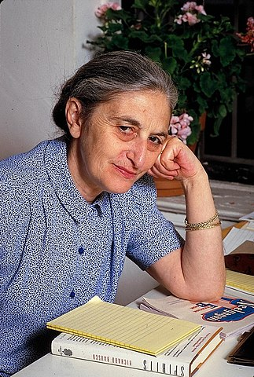

Story
We will read this beautiful, beautifully written story, with a completely cringe-worthy character in it.

From: https://www.britannica.com/biography/Ruth-Prawer-Jhabvala
Ruth Prawer Jhabvala, original name Ruth Prawer, (born May 7, 1927, Cologne, Germany—died April 3, 2013, New York, New York, U.S.), novelist and screenwriter, well known for her witty and insightful portrayals of contemporary Indian lives and, especially, for her 46 years as a pivotal member of Ismail Merchant and James Ivory’s filmmaking team.
Jhabvala’s family was Jewish, and in 1939 they emigrated from Germany to England; she was made a naturalized British citizen in 1948. After receiving an M.A. in English (1951) from Queen Mary College, London, she married an Indian architect and moved to India, where she lived for the next 24 years. After 1975 she lived in New York City, becoming a U.S. citizen in 1986.
We will read this beautiful, beautifully written story, with a completely cringe-worthy character in it.
The Great Indian Family: New Roles, Old Responsibilities, https://www.amazon.in/Gitanjali-Prasad/e/B001HPLWHW/ref=dp_byline_cont_pop_book_1
Mukul Kesavan, The ugly Indian man: Of hygiene, hair and horrible habits, https://www.telegraphindia.com/opinion/the-ugly-indian-man-of-hygiene-hair-and-horrible-habits/cid/1026680#
Song: Yeh Jeevan Hai Is Jeevan Ka Yahi Hai
Movie: Piya Ka Ghar
Year: 1972
Singer: Kishore Kumar
Music: Laxmikant Pyarelal
Lyrics: Anand Bakshi
Cast: Anil Dhawan, Jaya Bhaduri
Director: Basu Chatterjee
{{% youtube "IEcYHmAbznE" %}}